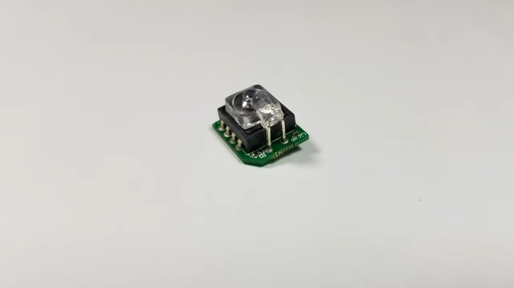
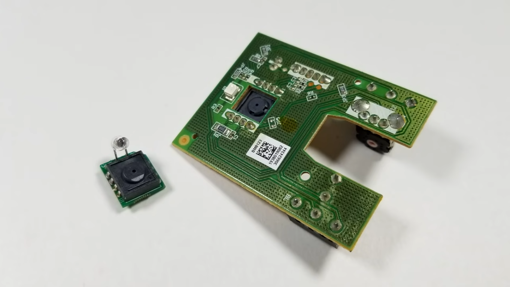
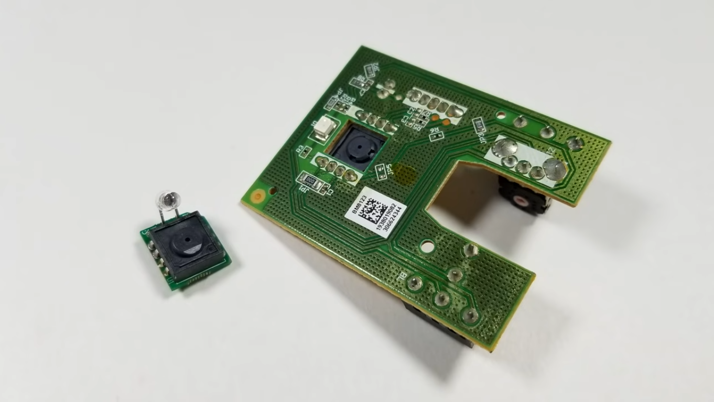
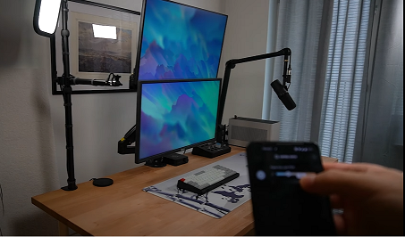
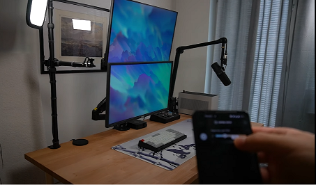
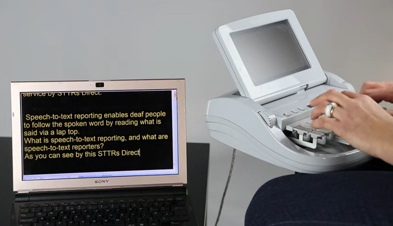
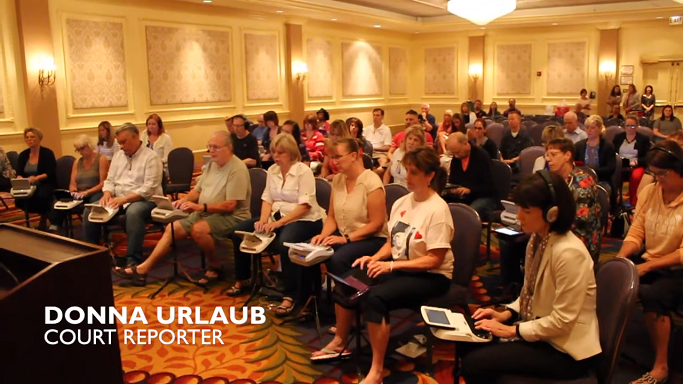
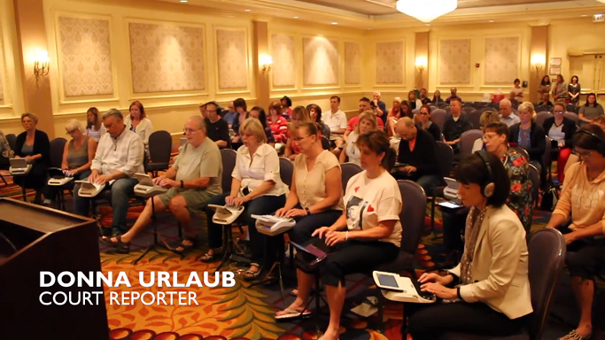
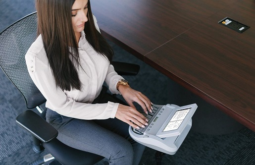
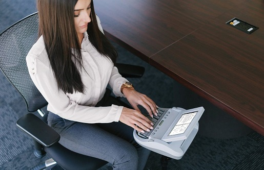

Design how to implement word typing properties in software
Properties based in word generation
From Andraelity, a relation with Me and WORDS
This is an article capable to sustain, the kind of elements we need to set in order to promote the construction of more details around the generation of words.

CONSTRUCTION OF WORDS one of the primary components we need to solve in this structure of the world is the ability of the people to communicate characteristics about reality, this reality is based as a conjuction of elements with logic and reasoning as its main driver, if you want to share a meaning or a idea with someone else you are forced to enable the construction of paths with language as its core ingredient, language as its primary subject, language as the unique model the human mind can access to fullfil its desire to obtain an objective, with this structure in mind, we realize our only option to subdue at its magnificent, by setting and approaching this kind of behavior as our pivot point of returning, enable us to keep iterating around this perpetual and limitless structure of reality. Setting the production of a positive and evolutive communication as the most important element in the person who is obligated to respond/answer to the objects where he is curretly inmerse.
By understanding the mind of our fellow men equal to everyone else, a mind where its only project is to produce the generation of more components the production of more elements capable to answer the questions we want to solve, the question we need to solve, the doubts to make the proper solution to each single iteration of live, learning how the mind can make langauge productions loaded with the main property to set more constructions, more path of creativity, more path of understandings and work, this only can happend if we stablish a past or a background where the production of this unavoidable property in life can occur, what i am trying to say is we need people to keep structuring and defining actions that enable the generation and perpetual motion of the language, of the psyche capable to produce sounds, the psyche capable to generate more ingredients in this tune we call existence, mentalities capable to dream with desires with objectives, setted as an unavoidable representation of ideas as communication.
What i propose is to slave people with dreams to be better, childs, students, workers and each single individual with the main purpose to became an anventurer of reality, make the people in our control to learn more ways to dreams, more objectives to set, a clear path of evolution, a clear path of psyche improvement, this pysche can be approximated as a entity with the only desire to play became by approaching perfection, learning that in this current timeline we are inmerse in a reality where language of symbols and sounds, define the wholeness of the human mind, learning that the objectives we want to trace are based completely as an unaboidable structure of sharing and lending ideas, I perceive everyone as my comrades and as my family and i want to make my comrades/slaves able to share and obtain more dreams more objectives more properties in their lifetime that make its life enjoyable and excited. By learning how to share their words in different languages, in different enviroments, sharing the perpetual understanding of the world as words; in an system where its impossible to elimate the necessity to name and describe things with symbols and sounds, like we write and talk, like we read and sing, like we think and create.
Visualize the creation of words in a controller enviroment.
I need to generate a component where the actions and the details of the world can be unified, as a relationship between words and software, keyboards and typing, hand and eye, mechanics and text production.
the continual promotion of the language we need to set and experience in each computer model, by setting more actions, by setting more productions, by generating the structures we need to compose, the actions in the teaching of the world, cuz this perception enable the representation of new ways to learn and maximize the continual production of more elements, sensing how to integrate more definitions, sensing what conversation is the new element in the world we need to approximate, what detail we need to approach in order to represent more models in our mind flow, express the ability to communicate more elements, the ability to share more dreams, structure bonds between persons, bonds in groups, set goals and approach the completeness of its behavior, what mentalities i can personalize in this field what i call my own understanding, if i want structure a way to behave, a way to describe more goals, a way to recreate more visions, a way to produce more connections between the words and the objects, the actions and the meanings, the drive and the conductor.
Using the production of connections between this idea of typing and sentence reading i can enable the representation of more qualities in software develepment where the key ingredients is to keep the people who is using the software to generate more typing properties, defining more ways to produce components where the unique option in this field is to set more missions, complete a set of clear goals that we can use in posteriori with the purpose to generate the abilites we need to set, the abilites we want to make them acquire, the users of our program, of our game, of our system, a very interesting field where action is the conductor of the ideas, where the actions users generate define what is the future they will approach, stablish a model needed to keep us learning more about the current world, learn what visions what histories i want to experience, what visions i need to generate, how to materialize ideas, what process i can validate in the world, what processes i can model in the current structure of the components, to increase the connectivity between the word typing ability i want to see in the world and the artistics vision i need to create by my current understanding of this field of work, achieve a enterprise where the users are the creators of the projects, where the players and the people who want to make a change in their life decide to describe the current components in the world by its own creation, simulating the representation of models, of idea models, of psychological perception of work, a new way to teach langauges, a new way to teach words, a new way to personalize how each player in the world decide to generate a change in their life capable to increase how their understanding is define, how each person decide to comprehend the differences between the narratives each particular language provide, using this expression of the divine to learn what changes life can provide to the user, who start to sense a motion of transformation, a motion of revelation, a motion where each single feeling describe cultural expression, learning that the man who is in charge of the experience of his own life, need to keep setting the work as its primary focus in his day to day motion, and sensing that by learning how to learn to create more language, they can provide the needed structure in this field loaded with the vision i need to promote, the vision i need to manifest, the vision we want to build in order to define more creativity, using the components work provide to the ones who start to use its gift, the ability to type really really really fast, and improve how the connectiosn are stablished, learning how to manipule the generation of words, in a controler enviroment, where the unique objective is to think talk and complety missions around the production of words, of ideas of meanings of actions, of visions, how to communicate the production of data.

Technology needed to produce the context where the vision can be sintetized.

What is the inside meaning of this quality, what is the inside value of this representation, learning how to generate more components, learning how to activate the inner visions of the mind, the inner structure of the man who's thinking, the man who is employing the ability to write and set qualities in motion, the man who is forming and behaving, by the actions he is constantly using as a mottor of network communication.
The property that we can use to enhance the values of each single being, the values i can put in practice if i solve and respond the particularities of this necessity to work, play and learn, the particularities we can solve if each single time i generate components and perceptions around the integrity of powers, to obtain more parts, to obtain more expressions, to obtain more details, to obtain power to change the world you are currently living in.
By enhancing the quality of the mind to generate powers, and velocity; what is a power, the ability to understand how a characterisctic/property can be transformed, and what is velocity, the ability to learn powers. Something only language and machines can represent in its entirety. A vision of the world loaded with movements charged with clear representations of the mind, of the prime expressions inside the threads of reality, the expressions capable to change how you obtain more qualities, the expressions you analyze each time you participate in the creation of fields and businesses, businesses related with the particularities of psyche mentality obtaining, of psyche power development, cultivation of soul ingredients, of soul movements, of soul power creation, of soul power generation. details only you can appreciate when your working in the structure of more loving values.
We need to work in this area of developement for the simple reason to obtain a component capable to maximize how the ideas are created, how the powers are generated, what elements can be used in the production of more perceptions of more qualities, of more visions, a movement of the psyche to another area of understanding, and while you are interacting with this particular area of developement enhance the effience of your own definition of quality, of your own definition of idea, of your own definition of improvement, something that only can be achieved when you focus your mind in the personalization around cretion and modelation, of this clear perceptual movement of the psyche, a expression loaded with the components i believe this actual movement and time of our reality really want to experience, a new way to interact with the machines in a meaningful set of communications.
Personalize what expressions we can always set, what expressions we can always transform, what visions i can always keep trying and combinating, by using this unique set of rules, this unique set of actions this unique set of perceptions, this unique model of action i can truly tell and share improve/maximize/upgrade the areas of work representation in the field of action and invention we are currently experiencing in this time.
Make a clear model of expression capable to use this area of creativity into the transforming field of development of writers, coders/programmers, designers, engineers, and gamers, all over the world, just because the unique essence of mouses/pointers we are currently inmnerse in this field of work and how its properties are used and continualy enhanced every time we used its action in the different areas of knowledge are currently into.
This essense based in the precision of this unique machine, the precission of this over engeenier necessity we all are into just for the no comparison of its unique qualities, of its unique spectrum of options in the market you can interact with, something we cant distance our self from.
By understanding the model and how the perceptual expressions are setted we perceive that the change can be generated if we put in action the values and the ideas started when we use this technology that hasn't been transformed or upgraded radicaly in the past 20 years.
Appreciating this form of tech, and how its behavior transform the understanding we are currently into, cuz its based and focused in the integrity related with text and pointer production, a unique field of action generated in this area of understanding COMPUTERS, text and pointers, text and pointers, if we can develop this particular machine to its highest complexity to its highest combinatory vision of research, and idea manifestation, learning what improvements we can make if every time we change how this area is created, how this area is modeled, how this area is perceived, what qualities i can change or transform in order to enhance the inside values of the totality we are currently putting our mind into.
Practical values are the principal and unique objective of personal verification, we all need to agree in order to compose new fields, in order to change or transform what elements we can activate, what elements we could dream of, what improvement in the speed we can use here, to change the particularities of this totality we are putting our minds into.


 



The primary objective with this hardwawre is to make a faster communication with the hands and the keyboard, due to the necessity to use pointers as a primary way to generate actions in the computer this necesity to produce a new machine that allow you mechanise more powers in this field, a new way to mechanise more words in this field of work, the necessity to obtain the ability to work faster and smoother, thanks to the quality this kind of mouse provide to the users, and the main reason to approach this field with a new kind of mouse or pointer whatever you want to call it, is that this element make the user always be at launch time of a work, a user who is able to write faster and easiest as he want, also this hardware object, provide to the user a friendly and ergonimic ecosystem where the actions you want to implement with a regular mouse can be generated equal with this mouse, this kind of particularity make the present object something people can integrate in their workflows with the unique porpose to improve and level up the efficient of his work, a work that we expect it is in its higher percentage of wholeseness text, typing, and communication based actions. I promote the construction of a field where the main purpose of the player is to sustain the communication of the program he is interacting with, this idea based around the properties of the games to make relationships and variability that only can be sensed when the properties are already formulated, the unability to experience the beauty of the actions till the production is currently in deployment, till the production is seeted as with the condition of variables, what elements we can generate in order to create more powers, the power to understand the viariation of the coplexities, the varion of the fields, the variation of the tunes, the variation of the realities we need to express as symbols in order to keep growing and approaching more language psyches. This artifact provide us with the needed actions to promote the contiunal construction of more code, the continual construction of words, the continual construction of messages, the construction of more language tunes Learn how to represent more perceptions, learn how to manipule the present structure of the language as something you can practice by repetition of ideas. Learning how to interact with the matter in order to provide more representations, learning how to produce tunes loaded with mind intelligence genaration, a component based with the primary structure of developement of the ideas.
Crear un entorno el cual permita que los usuarios puedan represntar mejores ideas sobre el contenido que se puede producir cuando centramos todas las versiones en un formato donde el principal objecto es transformar al sujeto en una entidad capaz de procesar mejores acciones relacionadas con la produccion de codigo y lenguaje el cual le permita manifestar como los productos teoriocos se generan. esta teoria en base a la representacion de contenidos de caracter calificativo, los contenidos de caracter mental necesarios para producir esas activdades que queremos materializar, usar el movimiento de este artefacto con el unico motivo de alcanzar la velocidad que se quiere producir, la velocidad que se puede centrar, la velocidad que queremos lograr con tal de mejorar con tal de avanzar en el procesamiento del saber, logrando obtener esos movimientos capaces de determinar que apreciaciones se pueden generar. Debido a la constante neceseidad de producir la respuesta la vida la cual maximize la appreciacion que tu tienes de la misma, apreciando como suceden todos esos movimientos de caracter intelectual, reconociendo como se puede llevar la mente al grado que se quiere conducir, la mente que produce las propiedades que necesitas para lograr facilitar la generacion de mas contenido a razon de la construccion de palabras.
Why Mechanical keyboards
Thanks to the properties mechanical keyboards provide, like its easiness and enjoyment of typing experience, and its exponential continual use in dayly activities provide us with a motion to implement in this structure we want to represent, this structure we want to enable, the capability to provide more structures in the current motion we are trying to provide, we are trying to express, the capability to set more functions and visions by its veriable and user experience of smooth keypressing actions a mechanical keyboard provide, enhancing by this vision the production of more components, the production of more data, the production of more actions and behaviors to present in the current field we want to improve.
This quality to be able trigger full motions, and really complex actions by the press of a button, could be a field of work to improve in future subjects, learning how to provide more interactions between the programs, learning how to express more ideas by using the previously idea of pointer/mouse, with this being a common factor in reality as keyboard/pointer-mouse experience, using its combined behavior with the main purpose to obtain characteristics, to obtain visions, to obtain models, to obtain configurations, to obtain representations that allow us to keep enhancing the values we want to improve, the ablity to type faster and faster, keep growing in speed, and inside understanding of words, of languages, a mission that clearly can make a change in the way the relationships in the world are estabilshed with the porpuse to difference the actions between one language and another, how the underlay structure of language/communication provide us with a way to perceive the divine, the mysteries of the combinatory experience inside the language, the combinatory experience we want to translate into motion, the dream to overcome reality and its magnificent by approaching it with little steps, little steps of communication, learning how to deploy more visions, learning how to represent more tunes, learning how to achieve ideas and goals, how this structure of time provide us with more values, how this complexity of goals enable us to keep achieving more and more projects loaded with the capability to let us grow in intelligence and perception, sensing how to personalize this field of work we want to represent, sensing how to produce more actions.
This specifically branch of keyboards lend us to achieve previusly named properties cuz it provide us with the option to press multiple actions with one stroke, by using this optoin we provide the users of the keyboard to a new evolution pattern where its continual developement in typing experience let him achieve new values, new motions, new combos of strokes, by learning how to type faster and faster, grow in complexity grow in perception, grow in movement, in speed, the primary problem in communication, being unable to enhance the production of messages loaded with the properties we want to achieve, the properties we want to formulate, the visions we are trying to approach, the perpetual necessity to express an idea, a dream, an objective a path of understandings, sensing what representations we need to integrate in the totality in the wholeness.
TYPING EXPERIENCE OVER 170 WORDS PER MINUTE (WPM)
https://www.youtube.com/watch?v=oxN1C2QQUIE&ab_channel=DrTypewriter
https://www.youtube.com/watch?v=imtiA8v06Yg&ab_channel=mypanupat
https://www.youtube.com/watch?v=aGIn_TXk-KY&ab_channel=NoThisIsJohn
https://www.youtube.com/watch?v=-tpsAj29Hy4&ab_channel=slekap
https://www.youtube.com/watch?v=8Ixtfo3I4VE&ab_channel=StenoKeyboards
https://www.youtube.com/watch?v=kOu7yY7qiik&ab_channel=WilliamKuwata
https://www.youtube.com/watch?v=WLu6yg3Jf0k&ab_channel=DanielChen
https://www.youtube.com/watch?v=A_Z3CmBQlHg&ab_channel=PierreM
https://www.youtube.com/watch?v=i24xrmkbX4g&ab_channel=joshu
https://www.youtube.com/watch?v=80_3-BHmuIQ&ab_channel=LMStrength
https://www.youtube.com/watch?v=FdkQ94mEsPo&ab_channel=Noba-osu%21
https://www.youtube.com/watch?v=4NjleF5c9wc&ab_channel=chakk
https://www.youtube.com/watch?v=A0IM-2zdNhY&ab_channel=shrekt
https://www.youtube.com/watch?v=a2hVHbqLUaU&ab_channel=Yada
The necessity for multi screen
 


Usando la mecanica de ordenacion sobre dos monitores de manera vertical nos es permitido orientar el desarrollo de juegos o software de diseño hacia un modelo especifico el cual tiene como proposito maximizar la eficiencia de los usuarios o jugadores que quieran interactuar con los programas que se interconectan en busca de maximizar la velocidad de escritura/ typing de diferentes lenguages, tales como son los de caracter programatico como los linguisticos, logrando que las propiedades que queremos formular puedan encontrar el proceso que buscamos sintetizar, analizando como las rutas del entendimiento en miras de la velocidad del pensar se ven beneficiadas cuando se amplifican los modelos que ahora existen con tal de lograr una mayor reactivilidad entre las partes, entre los distintos elementos de software que estamos buscando cuando interactuamos con sus complejidades, con sus sitemas, aprendiendo como las representaciones pueden formular caminos los cuales poder responder, los caminos los cuales poder mejorar con tal de utilizar las cualidades inherentes de su comportamiento en miras del procesamiento de una entidad centrada completamente en la generacion de conexiones las cuales implementar, las conexiones las cuales responder con tal de asimilar como los caminos se piensan, como los modelos de la realidad se estructuran en miras de una entramada red de trabajos y fuerzas que activan al mismo tiempo que actuan en la construccion del individuo, esas mociones que nos direccionan completamente hacia la generacion de nuevas propiedades donde la capacidad de moverse entre distintos universos virtuales promueve la representacion de nuevas formas las cuales utilizar con tal de representar los movimientos de la mente en pro de la construccion de una vision la cual hacer realidad, ser capaces de generar una producccion de palabras la cual fomentar en busca de la modulacion de nuevos elementos de caracter narrativo en la experiencia de cada usuario por el simple hecho de maximizar como las funciones comunicativas se presentan, estas funciones basadas en la constante representacion de ideas y modelos intelectuales descritos en un entorno simbolico.
Describiendo como las funciones interactivas se construyen a medida que se implementan nuevas actividades sobre la existencia de estos programas, la capacidad de unificar los modelos de juego en un entorno en el cual podamos mejorar como se presentan las interacciones ese modelo personal el cual nos permita seguir implementando nuevas rutas sobre el saber, estas rutas necesarias para procesar mejores experiencias. es necesario el uso de multiples pantallas ya que se quiere crear un universo de lenguaje el cual permita la descripcion de mociones estructuradas en torno al incremento de puntos y abilidades sobre el entorno de juego que se este pensando, detallando con ello como las actividades se presentan como los modelos activos del saber se construyen, representando mas visiones sobre el modelo que se quiere trabajar, sobre el modelo que buscamos detallar, movimientos de caracter calificativo unificados en torno a la completa descripcion de las partes, un modelo intelectual el cual busca formalizar el desarrollo de nuevas estructuras procesativas donde el unico proposito es mantener el constante uso de los movimientos de mensajes, que se producen en todas las areas de procesamiento, este modelo intelectual ubicado en un mundo virtual, el cual fomenta la generacion de procesos, un modelo intelectual el cual distribuye todos sus activos sobre un campo de trabajo mas determinante, un ecosistema de pensamiento completamente caracteristico, donde la unica propiedad que se quiere fomentar es la generacion de actividades de caracter narrativo, donde la unica actividad que se desea procesar es esa expresion que produce cualidad en torno a las propiedades del habla y del escrito. Maximizando con ello las relaciones en el ahora capaces de construir procesos que puedan orientar como las formulas del tecleo se presentan como las formulas de produccion teorica hayan estructura en la constante practica del saber, en la constante formulacion de los procesos analiticos, en la constante diferenciacion de las rutas armonicas del presente, las rutas armonicas de la totalidad cargadas con los modelos que se quieren procesar los modelos que se quieren definir, los modelos que nos permiten concebir mas acciones, en busqueda de la constante participacion inherente de los sujetos que quieren pertenecer a un constructo social mas determinante, un constructo intelectual mas claro sobre la construccion del trabajo, aprendiendo a representar visiones sobre la expresion que se desea alimentar, la expresion que se desea producir, atendiendo a todo momento a la maximizacion de las abilidades de juego, las abilidades de trabajo, las abilidades de ordenamiento, las abilidades en el entendimiento de estos procesos de software, de mecanica de juego, de mecanica de aprendizaje, logrando gracias a esto una coherente busqueda de los propositos que se deseen alcanzar, ya que se sostiene de manera inevitable el entorno que produce comunicacion activa y positiva sobre las partes involucradas, debido a la perpetua practica de mensajes en torno a la obtencion de objetivos, ya que se fomenta la construccion de la mision principal de la personas el crecimiento intelectual.
Si ordenamos las propiedades de tal forma que se activen los contenidos antes mencionados lograremos que los individuos generen una actividad practica centrada en la modulacion y vision y exponenciacion de misterios centrados en la creacion de cultura, en la creacion de propiedades sistemicas, con el unico proposito de la maximizacion del contenido en produccion, con el unico objetivo de lograr generar una respuesta analitica sobre el lenguage que se conoce por experiencia propia se puede lograr, se puede comunicar y expresar, es una combinacion de pantallas en miras de la produccion de mas propositos, unir los elementos de trabajo en busqueda de una idea a alcanzar, una idea a producir, una idea a orientar, una idea necesaria para ubicar las sensaciones de los involucrados siempre hacia la determinacion de sus entendimientos. Ya que las pantallas promueven la construccion de mas entidades de software de caracter gamificante, entidades de software de carater practico, generando con ello nuevas rutas interactivas, generando con ello nuevas rutas practicas sobre el modelo, generando propiedades las cuales mejorar a medida que centramos la edificacion de coherencias sobre la estructura que se desea aplicar, mejorando como las relaciones de poder se producen al momento de enfrentar las partes hacia si mismas, como las relaciones interactivas de los movimientos de los sujetos entran a participar en la definicion de procesos, ser capaces de jugar a crear y crear todo lo que nos sea permitido, creando y formulando, pensando y detallando, activando y concentrando todas las mociones en torno a la edificacion de los procesos de entendimiento.
Unicamente es necesario el uso de las actividades programativas, necearias para que se puedan analizar los contenidos de este presente en pro del procesamiento psicologico de propiedades que te permitan generar mas entendimiento sobre como el movimiento de las verdades sucede, activando las partes que pertenecen a la generacion de nuevas relaciones de caracter gamificante, generando las propiedades que te ayudan a visualizar los contenidos que se presentan ahora mismo, en forma de cultura, en forma de trabajo, en forma de velocidad, aprendiendo a ser mas preciso en la generacion de experiencias, en la generacion de movimientos practicos de talla mecanizante, de talla comando, buscando generar la expresion que te permite formular mas sobre los contenidos que quieres aprender sobre los contenidos que se quieren procesar, las relaciones interactivas que buscamos entender, esa propiedad de la realidad que define como los sistemas se crean, como los entornos de trabajo de producen, activando la generacion de propiedades, ser capaces de coordinar rutas interactivas, ser capaces de coordinar rutas practicas, ser capaces de formalizar las relaciones del entendimiento, coordinando como las formulas algoritmicas se procesan, entendiendo que los motivos de produccion sobre pantallas ayudan a que las relaciones de codigo puedan encontrar funcion, y ejecucion sobre una estructura mas practica, entendiendo yo como sujeto capaz de jugar, y con esto atender a la mecanica de crecimiento las partes que producen el significado ya que unicamente con el perpetuo perfeccionamiento del ecosistema se nos puede permitir mejorar como las actividades se generan, como las rutas de trabajo se pueden coordinar en pro de la generacion de nuevas muestras interactivas, utilizando mejores sucesos, utilizando mejores practicas, aprendiendo como yo puedo producir mejores actividades, como yo analizo he interctuo con la materia, gracias a la utilizacion de repuestas interactivas sobre la logica del lenguaje, gracias a la utilizacion de componentes capaces de resolver la necesidad de sostener el trabajo y las actividades que se continuan construyendo, activando como las misiones de este modelo participan en la generacion de mejores practicas, las misiones que nos permiten responder eficientemente a la teoria que se quiere diseñar, a la teoria que se quiere potenciar, lograr que las personas mantengan una velocidad de escritura y de asimilacion de ideas altamente construida. Recreando mejores configuraciones sobre la totalidad de juego que se continua aprendiendo, como puedo organizar los formatos que se presentan en mi vida en torno a la participacion constante de las interacciones en pro de la presentacion de actitudes, en pro de la construccion de formatos de caracter interactivo, la definicion de modelos que produzcan la generacion de mejores propiedades de mejores formulas que maximicen como se pueden apreciar las relaciones de rendimiento de esta estructura que estamos planeando, de esta estructura que buscamos sintetizar en forma de procesamiento teorico, practico y linguistico.
Stenographer synonym of someone who knows how to type really really fast
There is this machine, court reporters use in trials when they want to take note of each single word the parties are communicating, how the words in this conversations between the judge and the litiganst, this machine allow the person in use of it, to write pages at least at 200 words per minute and you coudl think that this machine works similarly as a keyboard but you're wrong if you think that it behaves the same, cuz the stenegraph works as a combination of keys that allow the user to write a word without needing to press all the characters that build and construct it, the behavior it enable is a way to tell a computer to remember a previously setted word by the stenographer in order to type it faster, some example of this behaviour could be something like:
Imagine if you set the word "IMAGINARY" with the command who is trigger when the user of the steno machine press, "IMG", by setting the stenomachine with this command the user only need to remember these previously mencioned command in order to type the word "IMAGINARY", similar as the keys pressed in a piano, or the string pressed in a guitar, or the holes/buttoms of a Wind instrument .
Allowing the user the deployement of words in a sintactic enviroment capable to make the user structure actions in motion, sensing the structure of the texto into something more clear more complex defining a tune in reality capable to maximize the current generation of symbols/words we want to express, the options we want to enable, the description of the subject we need to promote, the production of data we need to set, the description we want to validate, the element we need to make real, the element of speed we can evolve if we focus the generation of data into something more valuable, into something more real, to the psyche, creating more powers in this reality, learn how to create components capable to set and produce more qualities, more visions, more ideas of complexity, the unique pattern combinatory provide with each iteration, laerning how to represnet more data, let this ecosystem of functions acquire its proper tune, the structure in this reality setted as something more precise, as something more creative, based completely in the production key trigger combos, where each combo is a unique word, a way to experience reality in its true form, creating more problems in the now, learning how to set more rules, and interactions between the patterns we could create when we focus the presentation of the visions into this complexity.
Allowing us to promote the description of clear tunes, the descriptions of more pure subjects, the continual developement of languages, of key core ingredients, that only can be achievable with complete participation of all the implicated, learning how to achieve the action structured around the ideas mind represents, based completely in psychological representation of the webs and networks we can produce while we define the participation of the users, achieving with this idea more perfection, achieving with this idea the option to attin more complexities we can completely resume, but experience we can transorm as true validation, creating and creating more models in this world, creating and creating more powers needed in the organization of the whole company, of the whole representation, the objective we only can summary if we redesign the whole concept, to materialize its vision of understanding around words, and communication with different softwares experiences required in order to sustain the production of more properties, arround the constant production of words analysis, something uncapable to be extracted from our perceptions, from our communications, from our true vision of the elements, learning what code is required, understanding what kind of art we need to generate with the purpose to produce more components, in order to redefine the qualities of this ecosystem.Creating powers in the continual evolution of the game and software we are currently interacting with, promoting the production of more text needed in the generation of pure fields, pure core ingredients we can stablish inside this force by the continual definition of projects an actions, the production of tunes and probabilities, around the combinatory structure we can define if we focus the perpetual reproduction of the subjects into clear verifications of reality, clear representations of the world, clear missions to accomplish, with the unique purpose of self improvement and word typing abilities, a expression offer to us if we focus the production of qualities into something more complete, a cycle builded around the resolution of thyself.
Each single component focused in the production of ways to express language, by working, gaming, and learning all in the same place, creating a universe where the only purpose of the persona is to create more visions in this formula, create more values in the world he is experiencing, make the ability to type words the economy of this field, the economy of this whole perception.
 

 

Games and typing
The idea with this program is to make people understand that they can create their own perception of language, by setting its own command to a word, and by doing this they can understand that each single action they express in this field can make them grow into something more powerful, into something more complete, defining their behaviors around the presentation of components, enhancing the options the are allowed to implement, make the users realize that with their own effor in this enviroment they can grow in perception about the fields inside different languages, learning how to produce more abstractions around the missions they need to conmplete in order to advance in representation, in order to promote the evolution of their psyche, the evolution of its ideas, the evolution of the components in the actions we want to implement, learning how to use the production of the understanding, the production of more fields, of more actions, the productions of more components, learning how to manipule more mentalities.
What i propose is to make a field of actions inside this current enviroment capable to produce the action i need to configure, the action i need to produce in this area of work, creating by this movement a precise definition of personality, creating a bussineses where people can interact with a machine loaded with this property of developement, creating a movement loaded with the property capable to generate the interaction we need to produce, the action we want to sintetize, by learning what movements define more properties, what movements define more abilities, what is the movie capable to structure the form we want to deploy. Is like an area of developement, learning how to manipule more representations in the world, learning how to use more actions, learning how to activate the now, learning how to sense the visions inside our mind, used in the fulfillment of our unavoidable expression of work, needed in order to sustain the creation of fields, the creation of actions, the creation of definitions, activating the movement setted inside our souls that make us create more actions, the movement inside our souls needed to construct the power we want to experience, the power to keep creating more movements, the power inside the totality loaded with pure representation, the power inside the work, the unescapable option in our life, the main action in this field structured as the key component in reality, the key component in this recreation of the world, learning how to produce more representations, and make the people interact with the world easily.
What i am trying to formulate is a formula model as something we can use to work, play and study at the same time, by using the expression we are experiencing right now in the creation of more ingredients the creation of more options, the creation of fields loaded with movement, an enviroment we can use to generate more actions of the people, learn how to use the ideas and the ability to work to employ the movement of the whole project.
What i am proposing is to define a reality where we can use people time in their own benefit with the purpose to make them participate in the use of their own time in their our improvement while they make us generate the code we want to promote, the understanding we need to visualize.
What is the actions we want to visualize, the movement we want to experience, learning how to integrate more powers with the words, learning what is the tune loaded with the production of values, charaterized with the expression of evoulution.
The main objective in this area of understanding is to create a feeling loaded with a quality capable to set more motions, a quality loaded with the present description of the human mind, the ability to create a piece of the whole, a part of the totality, a mission to set and accomplish, while your key philosophy is being structured as a vision to generate, a set of properties organized in a particular structure of realness and clearness, a expresions only capable to be obtained when the focus of the mind is setted propertly, when the focus of the mind is being setted to keep trying and trying till the whole build is created, and get in march.
first of all we need to define the real expression we are trying to seek, the real expression we are trying to perceive, the inside meaning of the entirety expression we are experiencing each time we focus the properties of the mind into something real, into something capable to make you feel complete, what i am expecting you to analyze from this expression im communicating, is the idea of a dream i can obtain if the properties of this vision can be setted, if the qualities are being organized in a clear and meaningful representation, loaded with the values of an inside and outside model created by the continual analysis of your own way to think your own ideas, something completely valuable, a clear expression of what you can do, what you could dream, what you create and induce in the people around the object you are trying to seek.
What i am realizing in this expression of quantitative manifestation of ideas, is that the human mind, is uncapable to create the expression it try to obtain, in its totality, in its integrity, just for the unavoidable limitation of the timeline we are all experiencing, and by this bound created for our own limitation, i experience a beautifull goal setted in this movement, the goal to keep loving and sharing ideas, with everyone so we can generate the expression we are feeling everytime the expression we are visualizing in our inner being, a expression of the creativeness, the inner God we all are modeling, the inner dreams we are desperate to obtain as fast as it could possibly go.
Okay if we perceive the time as it goes, going harder and harder everytime by its un avoidable expression of the generative components mind is creating every instant it pass through, the inner move psyche we cant escape just for being alive while surviving the neccessities of this current existence.
So if we cant produce a quality capable to promote the vision we are continualy thinking, continualy desiring, continualy seeking on, by our own self, we just need to focus the attention of a mass, a mass of people desiring to work and produce ideas, at its highest state of production, the ideas capable to approximate the completely movement of the qualities you are observing, the qualities you are transforming, the qualities you are formulating, the qualities you are always approaching, by using your a ability to conspirate a future of humanity, and use this incredible set of actions that can direct you to the wholeness you can forget, the wholeness you need to obtain, the mission you are constantly putting your attention in movement, your attention in action, your attention in perception, your mission in complete route of obtain.
Its the matter of the need, finding people tryig to show you the same focus your always producing, the focus you are always generating, the focus your are always putting your attention on, the focus your personality is trying to generate every single instant you get your ideas in touch with somebody else.
Every moment the inside values of your psychological characteristics are setted in the way of psyche representation, of psyche production, of psyche maximization, of psyche qualification, of psyche introduction. A meaningful description of the movements we are always approaching, the movements we cant distance our self from. We need to participate in the expression of the mind qualified as a bussiness of work quality, of work mentality, of work reality, of work capability, a really meaningfull component in this field of action, in this field of perception, by defining the problems we are constantly perceiving we are constantly disguising as real, and true. So we can transform our self in the future to the being i want to became, the wholeness i want to put my mind in and through.If i want to create this idea, if i want to materilize the continual thinking i am approaching each time i set my mind in action, i can acquire a piece of totality, i can obtain a piece of expression, i can generate a movement of personality, a movement of qualities described as part of the whole expression, as a piece of the entirety movement, the entirety expression of this field of work, an enviroment setted as a conjunction of elements an enviroment setted as a reunion of qualities, an enviroment described only by the well designed parts of this current feeling, of this current transformation of the world, of how the meanings can be united into a meaningful and valuable production of combinations.
https://github.com/Andraelity/Wiki-1-U-03.git/tree/main/program/booleCom.m

https://github.com/Andraelity/Wiki-1-U-03.git/tree/main/program/Boolecomp.m

https://github.com/Andraelity/Wiki-1-U-03.git/tree/main/program/Grado_de_precision.m

https://github.com/Andraelity/Wiki-1-U-03.git/tree/main/program/impropias.m

https://github.com/Andraelity/Wiki-1-U-03.git/tree/main/program/legendreProve.py

https://github.com/Andraelity/Wiki-1-U-03.git/tree/main/program/MN.py

https://github.com/Andraelity/Wiki-1-U-03.git/tree/main/program/PuntoMedioCompu.m

https://github.com/Andraelity/Wiki-1-U-03.git/tree/main/program/simp38.m

https://github.com/Andraelity/Wiki-1-U-03.git/tree/main/program/Solucion.py

https://github.com/Andraelity/Wiki-1-U-03.git/tree/main/program/textStart.txt

https://github.com/Andraelity/Wiki-1-U-03.git/tree/main/program/Todo_de_Integrales_Impropias.m
 -->
-->